Lines & Angles — Practice Set
Bank code: GEO-LNA · Section: Geometry · 30 questions — Easy 8 · Medium 18 · Hard 4
Every angle in a transversal figure is x or 180 - x; decide which from the stated facts, never from how the figure looks, because plane figures are not drawn to scale.
Every question below is live in the question bank under the ID shown — the sheet and the portal are the same questions. Attempt a level with the clock running, then check Part C.
Part A — Questions
Quantitative Comparison — the four choices are always the same, so they are not reprinted: (A) Quantity A is greater · (B) Quantity B is greater · (C) The two quantities are equal · (D) The relationship cannot be determined from the information given
Level 1 · Easy — 8 questions · ~5 min
warm-up — these must be automatic
Q1 · GEO-LNA-001 · MCQ · 40s
Two angles are complementary. One angle measures 34°. What is the measure of the other angle?
(A) 34°
(B) 46°
(C) 56°
(D) 146°
(E) 156°
Q2 · GEO-LNA-002 · MCQ · 40s
Two angles are supplementary. One angle measures 112°. What is the measure of the other angle?
(A) 22°
(B) 58°
(C) 68°
(D) 78°
(E) 248°
Q3 · GEO-LNA-005 · Numeric Entry · 35s
Angles A and B are a linear pair. Angle A measures 73°. What is the measure of angle B, in degrees?
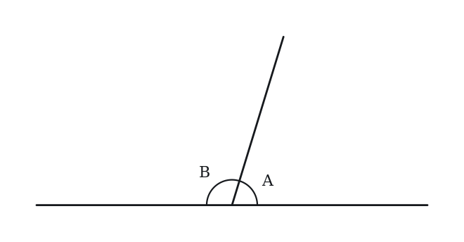
Numeric entry — write the number.
Q4 · GEO-LNA-009 · Numeric Entry · 35s
Ray OB bisects right angle AOC. What is the measure, in degrees, of angle AOB?
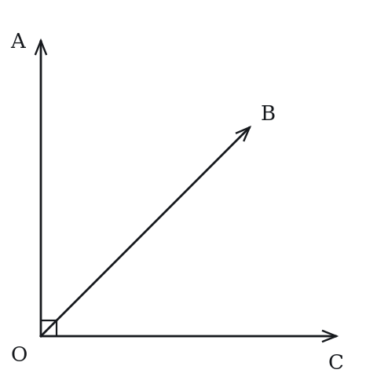
Numeric entry — write the number.
Q5 · GEO-LNA-011 · QC · 45s
Two lines intersect forming angles p, q, r, and s arranged so that p and r are vertical angles, and q and s are vertical angles.
Quantity A: p + q Quantity B: 180°
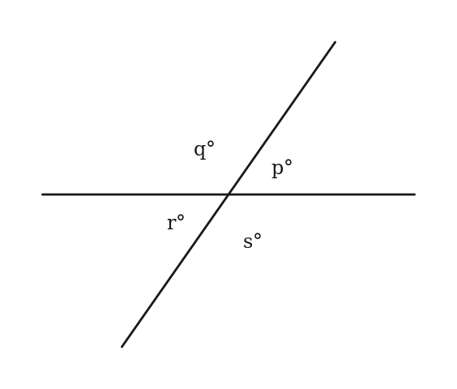
Q6 · GEO-PLT-002 · MCQ · 45s
Lines l and m are parallel and are cut by a transversal t. An interior angle of 110° is formed at line l, on the left side of t. What is the measure of the alternate interior angle at line m?
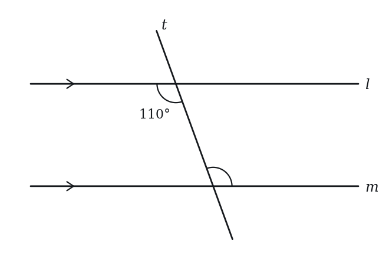
(A) 70°
(B) 80°
(C) 110°
(D) 140°
(E) 180°
Q7 · GEO-PLT-003 · Numeric Entry · 45s
Two parallel lines are cut by a transversal. A co-interior (same-side interior) angle measures 72°. What is the measure, in degrees, of the other co-interior angle?
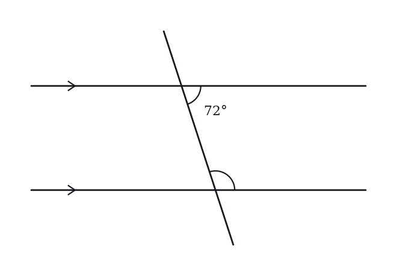
Numeric entry — write the number.
Q8 · GEO-PLT-006 · QC · 40s
Lines a and b are parallel and are cut by a transversal. One interior angle measures 80°.
Quantity A: The measure of the angle that is alternate interior to the 80° angle Quantity B: 80°
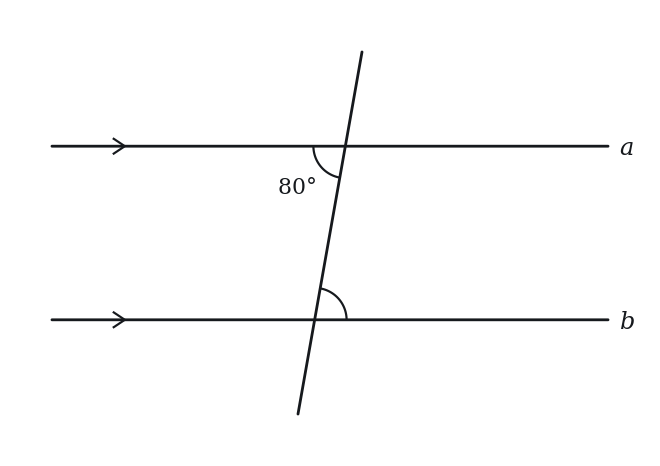
Level 2 · Medium — 18 questions · ~25 min
two or three steps, one planted trap each
Q9 · GEO-LNA-016 · MCQ · 70s
Two angles are supplementary. The larger angle is 40° more than three times the smaller angle. What is the measure of the larger angle?
(A) 100°
(B) 115°
(C) 130°
(D) 145°
(E) 160°
Q10 · GEO-LNA-017 · MCQ · 65s
Two lines intersect forming four angles. One angle is labeled (5x + 10)° and the angle vertically opposite to it is labeled (3x + 50)°. What is the value of x?
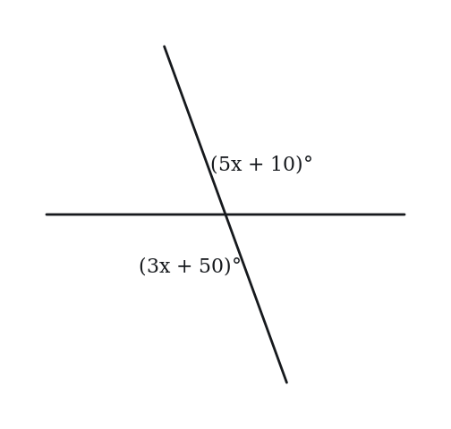
(A) 10
(B) 15
(C) 20
(D) 25
(E) 30
Q11 · GEO-LNA-027 · MCQ · 80s
Three lines meet at a single point. The six angles formed (going around the point) are in the ratio 1:2:3:1:2:3. What is the measure of the largest angle?
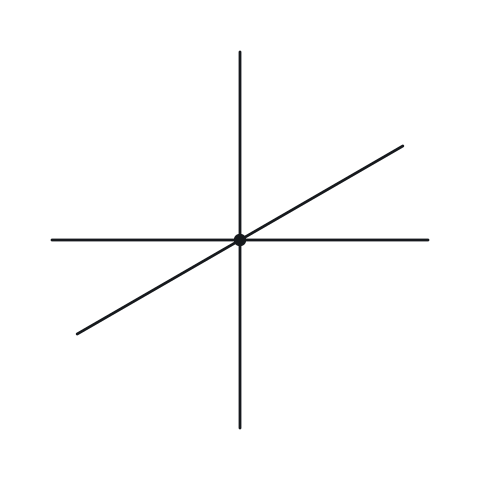
(A) 60°
(B) 90°
(C) 100°
(D) 120°
(E) 180°
Q12 · GEO-LNA-029 · Numeric Entry · 65s
Two complementary angles are in the ratio 2:7. What is the measure, in degrees, of the larger angle?
Numeric entry — write the number.
Q13 · GEO-LNA-034 · Select all that apply · 80s
Two parallel lines are intersected by a transversal. Which of the following pairs of angles are always equal? Indicate all such pairs.
(A) Corresponding angles
(B) Interior angles on the same side of the transversal
(C) Alternate interior angles
(D) Alternate exterior angles
(E) Exterior angles on the same side of the transversal
Q14 · GEO-LNA-035 · MCQ · 75s
Ray OB bisects angle AOC. Angle AOB = (4x + 7)° and angle BOC = (6x - 13)°. What is the measure of angle AOC?
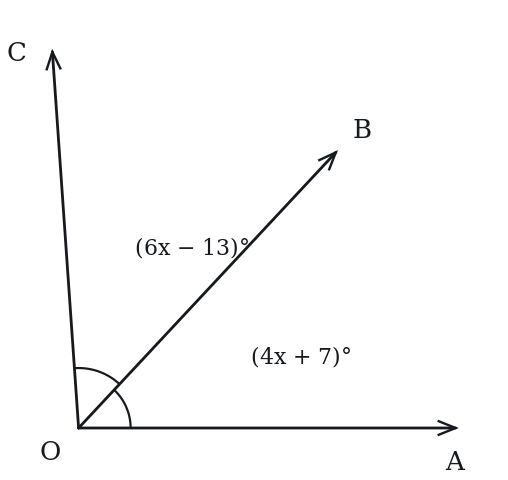
(A) 27°
(B) 47°
(C) 54°
(D) 94°
(E) 108°
Q15 · GEO-LNA-036 · QC · 80s
Angle M is 20° more than its supplement.
Quantity A: Angle M Quantity B: 100°
Q16 · GEO-LNA-044 · Numeric Entry · 100s
Ray OD bisects angle AOB, and ray OE bisects angle BOC, where A, O, C are collinear (B is not on line AC). Angle AOB = 70°. What is the measure, in degrees, of angle DOE?
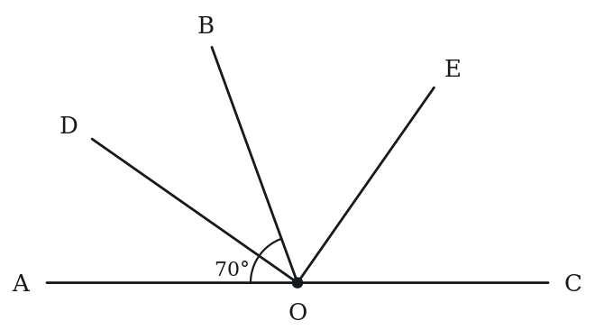
Numeric entry — write the number.
Q17 · GEO-LNA-047 · QC · 95s
Angle A and angle B are supplementary. Angle A and angle C are complementary.
Quantity A: B - C Quantity B: 90°
Q18 · GEO-LNA-049 · MCQ · 85s
Two lines intersect. One of the angles is twice the measure of an adjacent angle. What is the measure of the smallest angle formed at the intersection?
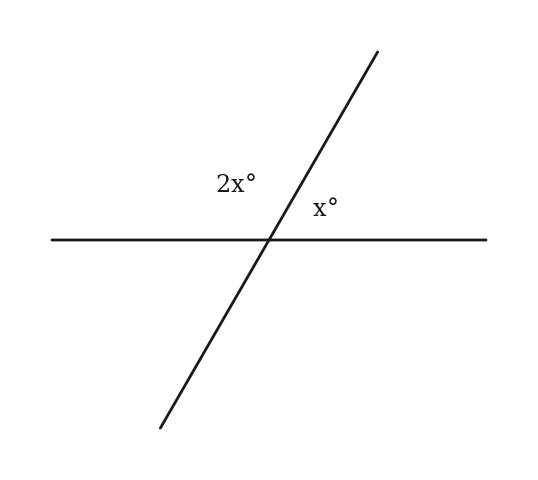
(A) 45°
(B) 60°
(C) 72°
(D) 80°
(E) 90°
Q19 · GEO-LNA-054 · MCQ · 115s
Five rays OA, OB, OC, OD, OE emanate in order from point O. The angles between consecutive rays are AOB = x°, BOC = 2x°, COD = 3x°, DOE = 4x°, and EOA = 5x°. What is the measure of angle COD?
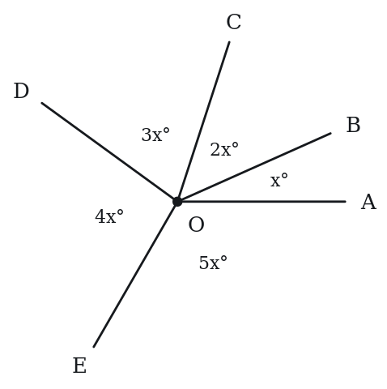
(A) 48°
(B) 60°
(C) 72°
(D) 84°
(E) 96°
Q20 · GEO-PLT-016 · QC · 75s
Lines j and k are parallel and are cut by transversal t. Angle A at line j measures (2y + 10)°. The angle at line k that corresponds to angle A measures (y + 55)°.
Quantity A: y Quantity B: 45
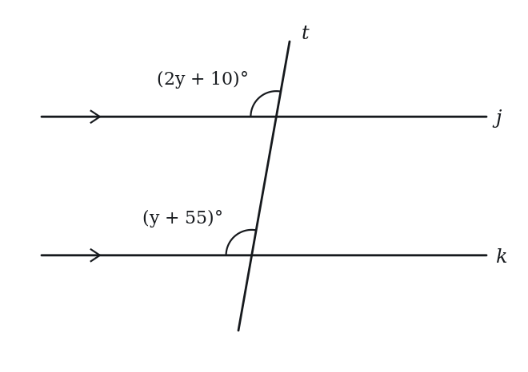
Q21 · GEO-PLT-018 · MCQ · 80s
In triangle ABC, line DE is drawn parallel to BC, with D on AB and E on AC. If AD = 6, DB = 4, and DE = 9, what is the length of BC?
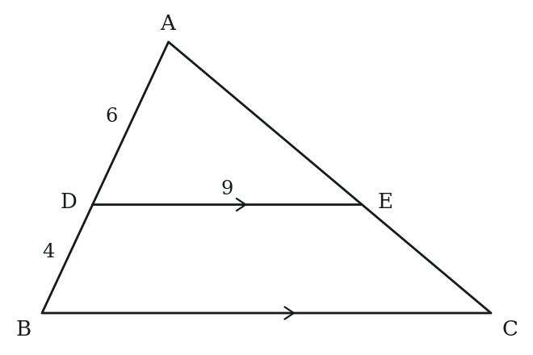
(A) 12
(B) 13.5
(C) 15
(D) 18
(E) 21
Q22 · GEO-PLT-020 · Numeric Entry · 70s
Two parallel lines are cut by a transversal. Two angles lie between the parallel lines and on the same side of the transversal, one at each line, and measure (3x + 10)° and (x + 50)°. What is x?
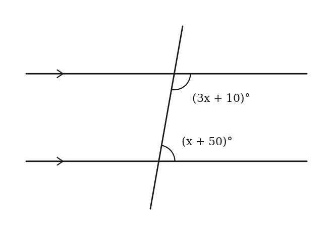
Numeric entry — write the number.
Q23 · GEO-PLT-023 · Select all that apply · 85s
Lines a and b are parallel, cut by transversal t. Angle 1 is an acute angle at line a that lies between the two lines.
Which of the following statements are true?
Indicate all such statements.
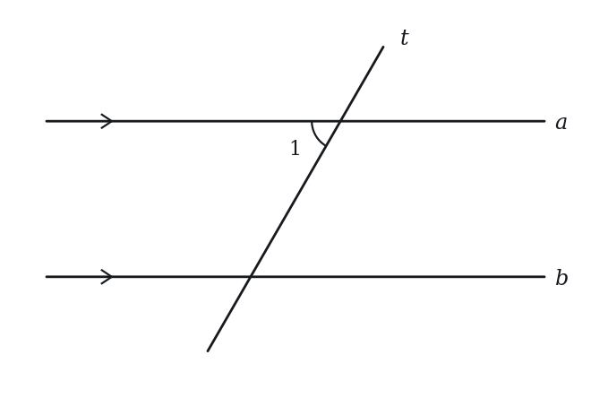
(A) The corresponding angle at line b equals Angle 1
(B) The co-interior angle at line b equals Angle 1
(C) The alternate interior angle at line b equals Angle 1
(D) The co-interior angle at line b equals 180° − Angle 1
(E) The angle at line b vertically opposite the alternate interior angle equals Angle 1
Q24 · GEO-PLT-030 · QC · 85s
In triangle ABC, DE is parallel to BC, with D on AB and E on AC. AD = 3, DB = 5. The area of triangle ABC = 100.
Quantity A: Area of trapezoid BCED Quantity B: 9/64 × Area of triangle ABC
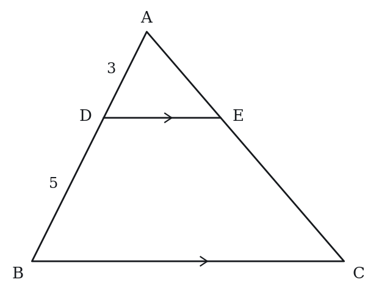
Q25 · GEO-PLT-037 · MCQ · 90s
AB ∥ CD. Point E lies between the two parallel lines. Angle ABE = 35° and angle CDE = 50°. What is the measure of angle BED?
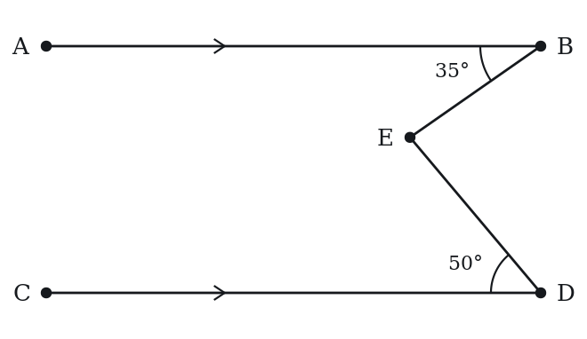
(A) 75°
(B) 80°
(C) 85°
(D) 95°
(E) 115°
Q26 · GEO-PLT-044 · Select all that apply · 105s
Lines a ∥ b. Transversal t creates angles with a and b. A second transversal s (not parallel to t) also cuts a and b at different points.
Which of the following statements are always true?
Indicate all such statements.
(A) Corresponding angles formed by t with a and b are equal
(B) The angle that t makes with a equals the angle s makes with b
(C) Co-interior angles formed by s with a and b sum to 180°
(D) Alternate interior angles formed by t are equal to alternate interior angles formed by s
(E) Alternate exterior angles formed by t with a and b are equal to each other
Level 3 · Hard — 4 questions · ~7 min
where 162+ is won or lost
Q27 · GEO-LNA-045 · Select all that apply · 90s
The measures of two angles are x degrees and y degrees, where x > y > 0, and the two angles are supplementary. Which of the following could be the value of x - y?
Indicate all such values.
(A) 0
(B) 45
(C) 90
(D) 170
(E) 180
Q28 · GEO-LNA-050 · Select all that apply · 105s
AB ∥ CD ∥ EF, in that order from top to bottom. A transversal cuts all three lines. The angle above AB and to the left of the transversal measures 65°.
Which of the following angles must equal 65°?
Select all that apply.
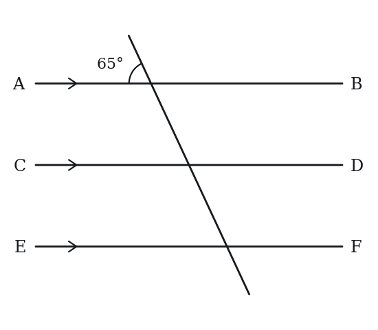
(A) The corresponding angle at CD
(B) The angle at CD above CD and to the right of the transversal
(C) The angle at CD below CD and to the right of the transversal
(D) The corresponding angle at EF
(E) The alternate exterior angle at EF (outside all three lines)
Q29 · SEC-PG-019 · QC · 95s
Line segment AD has length 40. Point B lies on AD, and segment BD has length 22. Point C also lies on AD, and segment BC has length 5.
Quantity A: The length of AC Quantity B: The length of AB
Q30 · SEC-PG-024 · Select all that apply · 125s
A cycling route runs in a straight line from a trailhead to a lookout 62.5 kilometers away. A water station stands on the route 47.2 kilometers from the trailhead, and a ranger is always within 0.8 kilometer of the water station, measured along the route. A cyclist's bicycle broke down on the route at a point less than 0.6 kilometer before the lookout. Which of the following could be the distance, in kilometers, along the route between the bicycle and the ranger?
Indicate all such values.
(A) 13.5
(B) 14.0
(C) 14.8
(D) 15.6
(E) 16.1
F. 16.5
The rest of this sheet is part of Pro
All 30 questions, the answer key and full worked solutions with every trap named — plus 75 concept notes and 5,868 questions.